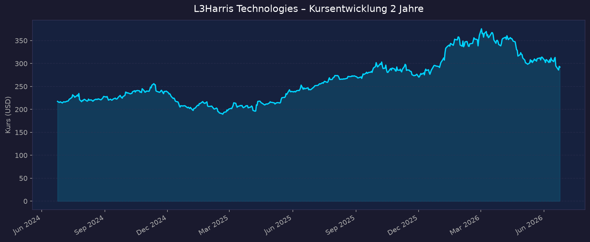
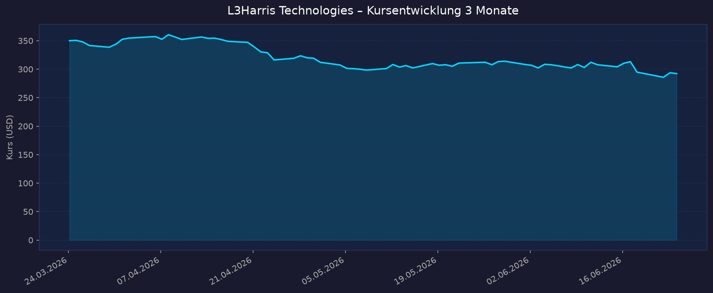

Sektor-Einordnung: L3Harris ist ein indirekter Weltraum-Play — ein profitabler, dividendenstarker Defense-/Aerospace-Konzern mit einem substanziellen Raumfahrt-Geschäft (Satelliten-Payloads, Infrarot-Sensoren, SDA-Tracking-Layer-Tranchen, Aerojet-Rocketdyne-Antriebe). Kein defizitärer Pure-Play, sondern ein etabliertes Unternehmen mit Gewinn, Dividende und Rekord-Auftragsbestand. KGV ist daher voll aussagekräftig (siehe Abschnitt 2).
📈 1. Kursentwicklung
Aktueller Kurs: 292,27 USD | Veränderung heute: −0,51 %
Chart – 2 Jahre

Chart – 3 Monate

| Zeitraum | Kurs Start | Kurs Ende | Veränderung |
|---|---|---|---|
| 2 Jahre | ~208 USD | 292,27 USD | ~+40 % |
| 3 Monate | ~318 USD | 292,27 USD | ~−8 % |
| 52-Wochen-Hoch | — | 379,23 USD | — |
| 52-Wochen-Tief | — | 243,84 USD | — |
Beobachtung: Die Aktie lief auf 1-Jahres-Sicht stark (rund +70 % zum Hoch, Outperformance ggü. Lockheed +42 %), hat aber seit dem 52-Wochen-Hoch (379 USD) deutlich korrigiert. Allein am 20.06.2026 −5,86 % (siehe News-Abschnitt). Interaktiver Chart: https://www.tradingview.com/symbols/NYSE-LHX/
💹 2. KGV-Entwicklung (Kurs-Gewinn-Verhältnis)
Aktuelles KGV (TTM): ~31,9 | Forward-KGV (2026e): ~21,5–24,4
| Zeitraum | KGV | Einordnung |
|---|---|---|
| Aktuell (TTM) | ~31,9 | über Branchenschnitt (Lockheed ~22x fwd) |
| Forward 2026e | ~21,5–24,4 | bei EPS-Guidance 11,40–11,60 USD deutlich günstiger |
| ~April 2026 (bei 322 USD) | ~37 | Spitze nach Q1-Zahlen |
| vor 12 Monaten | nicht exakt verfügbar | tendenziell niedriger (Kurs damals tiefer) |
| vor 24 Monaten | nicht exakt verfügbar | — |
Bewertung: Das TTM-KGV von ~32 wirkt für einen Rüstungswert hoch (Peer Lockheed ~22x forward), spiegelt aber den starken EPS-Sprung und Auftragsboom. Auf Forward-Basis (~21–24x bei EPS 11,40–11,60 USD) ist die Bewertung moderat — der Markt preist zweistelliges Gewinnwachstum ein. Macrotrends-Historie war nicht abrufbar (HTTP 402), exakte 12/24-Monats-KGV daher nicht verfügbar.
💰 3. Sales Multiple (Kurs-Umsatz-Verhältnis / P/S)
Aktuelles P/S-Verhältnis: ~2,4 (MarketCap 54,4 Mrd. / Umsatz TTM 22,5 Mrd. USD)
| Zeitraum | P/S Ratio | Einordnung |
|---|---|---|
| Aktuell | ~2,4 | typisch für profitablen Defense-Konzern |
| vor 3 Monaten | ~2,6 | leicht höher (höherer Kurs) |
| vor 12 Monaten | nicht verfügbar | — |
| vor 24 Monaten | nicht verfügbar | — |
| EV/Sales | ~2,9 | inkl. Nettoschulden |
Trend: Stabil bis leicht fallend (Kursrücksetzer). Ein P/S von ~2,4 ist für einen profitablen Rüstungskonzern normal bis günstig — meilenweit entfernt von den zweistelligen P/S der defizitären Weltraum-Pure-Plays (z. B. Rocket Lab, AST SpaceMobile). Genau hier liegt der Vorteil des indirekten Plays: Weltraum-Exposure ohne Pure-Play-Bewertungsexzesse.
📊 4. Handelsvolumen (Trading Volume)
| Zeitraum | Ø Tagesvolumen | Auffälligkeiten |
|---|---|---|
| 3-Monats-Durchschnitt | ~1,35 Mio. Aktien | — |
| 10-Tage-Durchschnitt | ~1,57 Mio. Aktien | erhöht durch Juni-Sell-off |
| 2-Jahres-Durchschnitt | ~1,45 Mio. Aktien | — |
| Volumen-Peak (2J) | nicht exakt verfügbar | wahrsch. um Q1-Zahlen / Juni-Sell-off |
Volumentrend: Das 10-Tage-Volumen liegt über dem Schnitt — Ausdruck der erhöhten Nervosität rund um den Juni-Kurssturz (Iran-Waffenstillstand, Führungswechsel). Insgesamt ein liquider Large-Cap.
🏦 5. Insider Trades (letzte 2 Jahre)
| Datum | Name | Funktion | Kauf/Verkauf | Anzahl Aktien | Wert (USD) |
|---|---|---|---|---|---|
| 2025/2026 | Jon Rambeau | Segment-Präsident | Verkauf (Open Market) | 5.528 | @ 370,32 → ~2,05 Mio. |
| 01.11.2025 | Officer (RSU) | Officer | Vesting (1.632 einbehalten) | 4.147 vested | @ 289,10 |
| 02.01.2026 | Kenneth L. Bedingfield | CFO | Phantom-Units (Plan) | 20,25 Units | — |
| lfd. | div. Direktoren | Board | Deferred/Phantom Units | 106–661 Units | Vergütung |
3-Monats-Überblick: Netto Verkäufe — laut MarketBeat ~676.781 USD Insider-Verkäufe, 0 USD Käufe in den letzten 3 Monaten. Finviz: Insider-Transaktionen −1,86 %. 2-Jahres-Überblick: Überwiegend Routine-Verkäufe und Vesting-bedingte Abgaben, keine signifikanten Open-Market-Käufe durch Insider. Kein klares bullishes Insider-Signal, aber auch kein Panik-Abverkauf. Insider-Besitz nur ~0,68 %.
Quelle: SEC Edgar / StockTitan Form 4 / MarketBeat / Finviz (OpenInsider war nicht erreichbar)
🩳 6. Short-Positionen
Aktuelle Short Quote: ~1,3 % des Streubesitzes (Float)
| Zeitraum | Short Interest | Veränderung |
|---|---|---|
| Aktuell | ~1,3 % | −5,5 % ggü. Vormonat |
| Days to Cover | 1,78–1,95 | niedrig |
| vor 3–12 Monaten | nicht exakt verfügbar | historisch durchweg niedrig |
Einschätzung: Sehr niedrig — typisch für einen etablierten, profitablen Large-Cap mit ~90 % institutionellem Besitz. Keine relevante Short-Thesis am Markt; kein Short-Squeeze-Potenzial, aber auch kein Bärendruck.
🗞️ 7. Aktuelle Nachrichten
| Datum | Quelle | Nachricht | Relevanz |
|---|---|---|---|
| 20./21.06.2026 | TradingKey | LHX −5,86 % nach US-Iran-Waffenstillstand → sektorweiter Defense-Sell-off, geringere „Konflikt-Prämie" | Hoch |
| 18.06.2026 | div. | L3Harris prüft IPO der „Axyv"-Munitionssparte (JPMorgan, Morgan Stanley mandatiert) | Hoch |
| 16.06.2026 | SEC 8-K | Abrupter Abgang mehrerer Top-Manager ohne genannte Gründe/Nachfolger → Governance-Unsicherheit | Hoch |
| Juni 2026 | TradingKey/Analyse | Warnung vor 150–200 Bp Bruttomargen-Druck 2026 durch DRAM-/Halbleiter-Kosteninflation bei DoD-Festpreisverträgen | Mittel |
| Juni 2026 | Simply Wall St | LHX nach 106-Mio.-Army-Vertrag „23 % unterbewertet" laut DCF | Mittel |
| 19.06.2026 | div. Analysten | Konsens „Moderate Buy" / „Buy"; Kursziel ~355–382 USD (17 Analysten) | Mittel |
| 19.12.2025 | BusinessWire/SDA | SDA vergibt 843-Mio.-USD-Vertrag für 18 Tranche-3-Tracking-Layer-Satelliten an L3Harris | Hoch |
| 30.01.2026 | Via Satellite | Space-Geschäft 2025 flach, Reorganisation in neues Segment „Space & Mission Systems", Wachstum 2026 erwartet | Mittel |
| 30.04.2026 | div. | Q1-2026-Zahlen schlagen Erwartungen klar; Guidance angehoben; Rekord-Backlog 40,7 Mrd. USD | Hoch |
Sentiment: Gemischt — fundamental positiv (Rekord-Auftragsbestand, angehobene Guidance, SDA-Großaufträge), kurzfristig aber belastet durch Iran-Deeskalation (Defense-Prämie schrumpft), unerklärte Management-Abgänge und Margendruck-Sorgen. Daher der Juni-Rücksetzer trotz starker Q1-Zahlen.
📋 8. Letzte 3 Quartalsberichte
Q1 2026 (Kalenderjahr, berichtet 30.04.2026)
| Kennzahl | Ist | Erwartung | Abweichung |
|---|---|---|---|
| Umsatz (Revenue) | 5,7 Mrd. USD | ~5,47 Mrd. USD | +271 Mio. (+5 %); +15 % organisch YoY |
| EPS (GAAP, verwässert) | 2,72–2,74 USD | 2,57 USD | +0,15–0,17 (+33 % YoY) |
| Nettogewinn / Marge | 512 Mio. USD / 8,9 % | — | +33 % YoY (Vorjahr 7,5 %) |
| Free Cashflow | Teil von ~3,0 Mrd. FY-Ziel | — | — |
Guidance: FY2026 angehoben: Umsatz 23,0–23,5 Mrd. USD, EPS 11,40–11,60 USD, FCF ~3,0 Mrd. USD. Orders 7,8 Mrd. USD, Book-to-Bill 1,4x (international 2,2x), Backlog Rekord 40,7 Mrd. USD. Kursreaktion: +0,38 % vorbörslich (~322,63 USD); positive, aber verhaltene Reaktion.
Q4 2025 (berichtet ~Jan/Feb 2026)
| Kennzahl | Ist | Erwartung | Abweichung |
|---|---|---|---|
| Umsatz (Revenue) | ~5,6 Mrd. USD | ~5,77 Mrd. USD | −0,17 Mrd. (verfehlt) |
| EPS (Ist) | 2,86 USD | 2,77 USD | +0,09 (geschlagen) |
| Nettomarge | nicht exakt verfügbar | — | — |
| Free Cashflow | nicht exakt verfügbar | — | — |
Guidance: Initiierte FY2026-Guidance; Reorganisation in drei Segmente (Space & Mission Systems ~11,5 Mrd., Missile Solutions inkl. Aerojet ~4,4 Mrd.). FY2025: Umsatz 21,9 Mrd. USD (+3 %, +5 % organisch), GAAP-EPS 8,53 USD, Non-GAAP-EPS 10,73 USD, FY-Orders 27,5 Mrd., Book-to-Bill 1,3x. Kursreaktion: nicht exakt verfügbar (Umsatz-Miss vs. EPS-Beat → gemischt).
Q3 2025 (berichtet Okt. 2025)
| Kennzahl | Ist | Erwartung | Abweichung |
|---|---|---|---|
| Umsatz (Revenue) | 5,7 Mrd. USD | ~5,52 Mrd. USD | +0,18 Mrd. (+7 % YoY, +10 % organisch) |
| EPS (GAAP verwässert) | 2,46 USD | 2,39 USD | +0,07 (geschlagen) |
| EPS (Non-GAAP) | 2,70 USD | — | +10 % YoY |
| Free Cashflow | nicht exakt verfügbar | — | — |
Guidance: FY2025-Guidance erhöht. Kursreaktion: nicht exakt verfügbar (solider Beat).
🌍 9. Marktkontext & Wettbewerb
Markt / Branche: US-Verteidigung & Raumfahrt. Treiber 2026: generationelle Erhöhung der US-Verteidigungsausgaben, Raketenabwehr (u. a. „Golden Dome"-Initiative), Satelliten-Konstellationen der Space Development Agency (SDA). Der SpaceX-Börsengang am 12.06.2026 (Ticker SPCX, ~1,75 Bio. USD Bewertung) hat den gesamten Raumfahrt-Sektor 2026 befeuert und das Anlegerinteresse an Space-Exposure erhöht — L3Harris profitiert davon als etablierter staatlicher Auftragnehmer, ohne dem Bewertungs-Hype der Pure-Plays ausgesetzt zu sein.
| Wettbewerber | Stärke | Schwäche |
|---|---|---|
| Lockheed Martin (LMT) | Größter Defense-Konzern, größtes SDA-Tracking-Los (1,1 Mrd.), günstigeres fwd-KGV (~22x) | langsameres Segmentwachstum |
| Northrop Grumman (NOC) | ~90 Mrd. Backlog, B-21, starke Weltraum-/Überwachungssparte | hohe Programm-Komplexität |
| RTX (Raytheon) | Breites Raketen-/Sensorportfolio, Skala | Triebwerks-/Lieferkettenthemen |
| Rocket Lab (RKLB) | Pure-Play-Wachstum, baut ebenfalls 18 SDA-Satelliten | defizitär, sehr hohe Bewertung |
Weltraum-Bezug von L3Harris konkret:
- Space & Mission Systems (neues Segment, ~11,5 Mrd. USD 2026e): Satelliten-Payloads, Infrarot-Sensoren, On-Orbit-Datenverarbeitung, ISR.
- SDA Tracking Layer: Tranche-2-Vertrag ~919 Mio. USD, Tranche-3-Vertrag 843 Mio. USD (Dez. 2025, 18 Infrarot-Satelliten zur Raketenfrüherkennung).
- Aerojet Rocketdyne (2023 übernommen): Antriebe/Propulsion, nun Teil des neuen Segments Missile Solutions (~4,4 Mrd. USD 2026e) — Raketenantriebe für Trägersysteme und Abwehr.
- Space-Umsatz 2025 flach (SAS-Segment ~6,9 Mrd., +1 %), Operating-Marge +50 Bp auf 12,3 %; für 2026 Wachstum erwartet.
Branchentrends: (1) Rekordhohe Defense-Budgets & Raketenabwehr-Programme; (2) Proliferierte LEO-Satellitenkonstellationen (SDA) als struktureller Wachstumstreiber; (3) Halbleiter-/DRAM-Kosteninflation als Margenrisiko bei Festpreisverträgen. Marktposition: Etablierter Top-5-US-Rüstungskonzern, einer von vier SDA-Tracking-Layer-Anbietern, führend bei taktischer Kommunikation und ISR. Führend in Nischen, im Gesamtmarkt hinter Lockheed/RTX/Northrop. Risiken aus dem Marktumfeld: Geopolitische Deeskalation (drückt Defense-Prämie, vgl. Iran-Waffenstillstand Juni 2026), Budget-/Continuing-Resolution-Risiken, Margendruck durch Komponentenkosten, Programmverzögerungen.
🧮 Bewertungs-Score
| Kriterium | Score (1–10) | Begründung |
|---|---|---|
| Bewertung | 6,5 | TTM-KGV ~32 hoch, aber Forward-KGV ~21–24x bei zweistelligem EPS-Wachstum moderat; P/S ~2,4 günstig; teurer als Lockheed (22x) |
| Wachstum & Momentum | 7,5 | +15 % organisches Q1-Wachstum, Rekord-Backlog 40,7 Mrd., Book-to-Bill 1,4x; Kursmomentum kurzfristig negativ (−8 % in 3 Mon.) |
| Bilanz & Sicherheit | 6,5 | Debt/Equity ~0,58, Total Debt ~7,9–11,4 Mrd., Cash dünn (~0,6–1,0 Mrd.), Current Ratio 1,03; FCF solide ~3 Mrd.; Payout ~53 % nachhaltig; keine Verwässerung (Buybacks) |
| Qualität & Wettbewerbsposition | 7,0 | Etablierter Top-5-Rüstungskonzern, ROE ~9 % (eher mittel), Operating-Marge ~13 %, starke Nischenführerschaft (Comms, ISR, SDA-Satelliten) |
| Chancen vs. Risiken | 6,5 | Katalysatoren: SDA-Aufträge, Golden Dome, Axyv-IPO, Margenexpansion. Risiken: Iran-Deeskalation, Management-Abgänge, Komponenten-Inflation |
Gewichteter Gesamtscore: Bewertung 20 %, Wachstum 25 %, Bilanz 20 %, Qualität 20 %, Chancen/Risiken 15 % → (6,5×0,20)+(7,5×0,25)+(6,5×0,20)+(7,0×0,20)+(6,5×0,15) = 6,8 / 10
5-Jahres-Szenario (Horizont 2031)
Aktueller Kurs: 292,27 USD | Dividende: 5,00 USD/Jahr (~1,7 % Rendite), ~9–10 %/Jahr Steigerung historisch
| Szenario | Kurs 2031 | Annahmen | Gesamtrendite inkl. Dividende |
|---|---|---|---|
| Bär | ~250 USD | Defense-Budgets schrumpfen, Margendruck verfestigt sich, Programmverzögerungen, KGV-Kompression auf ~15x | ~−5 % Kurs, ~+8–9 % Dividenden → ~ +3 % gesamt |
| Base | ~430 USD | EPS wächst ~8–9 %/Jahr auf ~17 USD, Forward-KGV ~22–25x stabil, SDA-/Space-Wachstum trägt | ~+47 % Kurs + ~+10 % Dividenden → ~ +57 % gesamt (~9,5 %/Jahr) |
| Bull | ~580 USD | Golden Dome & SDA-Tranchen skalieren, Margen +200 Bp, Axyv-IPO hebt Wert, KGV ~27x, EPS ~21 USD | ~+98 % Kurs + ~+12 % Dividenden → ~ +110 % gesamt (~16 %/Jahr) |
Annahmen vereinfacht; reine Szenario-Illustration, keine Prognose.
📝 Gesamteinschätzung
Stärken:
- Rekord-Auftragsbestand 40,7 Mrd. USD (≈2× Jahresumsatz), Book-to-Bill 1,4x → hohe Umsatzvisibilität
- Profitabel und dividendenstark (5,00 USD, ~1,7 %, Payout ~53 %, lange Steigerungshistorie ~9–10 %/Jahr)
- Echtes, finanziertes Weltraum-Exposure (SDA-Tracking-Layer 843 Mio. + 919 Mio., Space & Mission Systems ~11,5 Mrd., Aerojet-Antriebe) — ohne Pure-Play-Bewertungsrisiko (P/S nur ~2,4)
- Forward-KGV ~21–24x bei zweistelligem EPS-Wachstum; niedrige Short-Quote, ~90 % institutioneller Besitz
- Niedriges Beta (~0,5) → defensives Profil
Risiken:
- Geopolitische Deeskalation drückt die Defense-Prämie (Iran-Waffenstillstand löste Juni-Sell-off −5,9 % aus)
- Unerklärte Abgänge mehrerer Top-Manager (8-K vom 16.06.2026) → Governance-/Ausführungsrisiko
- Bruttomargendruck 150–200 Bp durch DRAM-/Halbleiter-Kosteninflation bei DoD-Festpreisverträgen
- Bewertungsaufschlag ggü. Lockheed (~32x vs. 22x); dünne Cash-Position, Current Ratio nur 1,03
- US-Budget-/Continuing-Resolution-Risiken, Insider netto Verkäufer
Fazit: L3Harris ist ein qualitativ hochwertiger, profitabler Defense-Konzern mit echtem, gut finanziertem Raumfahrt-Standbein (SDA-Satelliten, Space & Mission Systems, Aerojet-Antriebe) — der „solide" indirekte Weltraum-Play gegenüber den hochbewerteten Pure-Plays. Fundamental (Rekord-Backlog, angehobene Guidance, Forward-KGV ~21–24x) ist die Aktie attraktiv; kurzfristig belasten jedoch Iran-Deeskalation, Management-Turbulenzen und Margenrisiken, was den Rücksetzer von 379 USD auf ~292 USD erklärt. Analysten sehen mit Kurszielen ~355–382 USD spürbares Aufwärtspotenzial. Score 6,8/10.
Datenquellen: Yahoo Finance · yfinance · stockanalysis.com · Finviz · MarketBeat · SEC Edgar/StockTitan · Macrotrends (P/E-Historie blockiert) · BusinessWire · SpaceNews · Via Satellite · Simply Wall St · The Motley Fool · Investing.com · TradingKey Keine Anlageberatung — rein informative Auswertung öffentlicher Daten